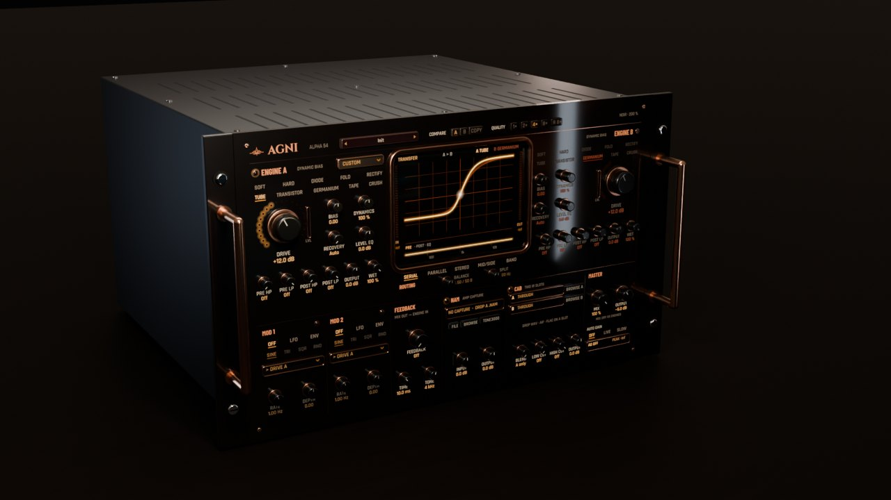
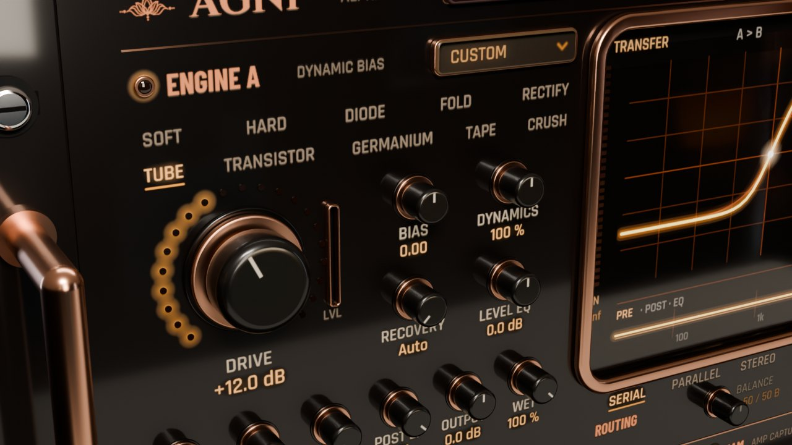
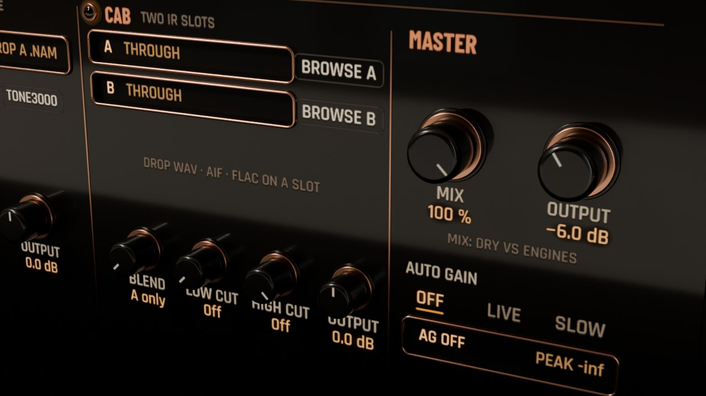

Two engines. Ten shapes.
Two distortion engines, and each one picks from the same ten shapes. Then five ways to wire them, a feedback loop, a capture slot and cab IRs. Engine A can also turn into one of eight pedals.. I basically wanted my whole dirt rack in one box.

Pyre skin · 3D render
Your audio, through the presets.
Pick a sample, or your own file, and hear it through twelve of the factory presets. This runs Agni's own engine in your browser, the same code the plug-in uses. Agni isn't out yet, so this is an early listen. Your file stays on your device: nothing is uploaded.
The first 15 seconds of one file, up to 25 MB. WAV, MP3, FLAC, OGG or M4A.
Limits: twelve presets, each with its own mix, the first 15 s of one file, levels set to a safe peak, no export or download. No capture slot or cab IRs here. The plug-in has every control.
Everything between clean and totally gone.


Pedal models
Flip Engine A from Custom to a pedal: Clean Boost, Tight Boost, Overdrive, Fuzz, Filter Distortion, Distortion, Metal or Octave Fuzz. Each one gets the three knobs you expect, Drive, Tone and Level, from 0 to 10. I fitted them to analysis and community captures of real pedals, clean blend and tone circuits included. Octave Fuzz even has its own octave-up stage. Switch back to Custom and your own engine settings come right back.
8 pedals · Drive · Tone · LevelTwo engines, ten shapes
Each engine grabs its own shape from the same ten: Soft, Hard, Diode, Fold, Rectify, Tube, Transistor, Germanium, Tape and Crush. Turn Drive and Bias and the scope draws the transfer curve live.. honestly I could watch that thing all day.
2 engines · 10 shapesRoutings, feedback and modulation
Five ways to wire the two engines together, and a feedback loop wrapped around both. Two modulators (LFO or envelope) can push drive, tone, bias or balance around while you play.
5 routings · feedback · 2 modsCapture and cab
Drop a neural capture (.nam) in after the engines, with a gate and a tight, mid or bright voicing in front of it. Then blend two cab IRs to taste. Oh, and Render Quality lets offline bounces run at a higher oversampling than you play at.
Capture slot · cab A/BOk, have a listen.
Hit play and flip between Dry and Agni. I matched the loudness on both, so you're hearing what it actually does.. not just "louder sounds better".
Watch the walkthrough.
Both engines, the router, the loop, the amp and cab slots, and a tone in two minutes.
I'd rather show you than tell you.
I ran every one of these offline through the plugin itself at 48 kHz. The settings I used are under each plot, so you can check my work.
Pick a finish.
These are straight from the plugin, no mockups. Click around.. I spent way too long on some of these.
Agni isn't out yet
I'm still finishing it, so there's no download or single licence for it just yet. It'll be right here when it's ready.
VST3 · Windows 64-bit · licence, trial and signed updates right inside the plugin